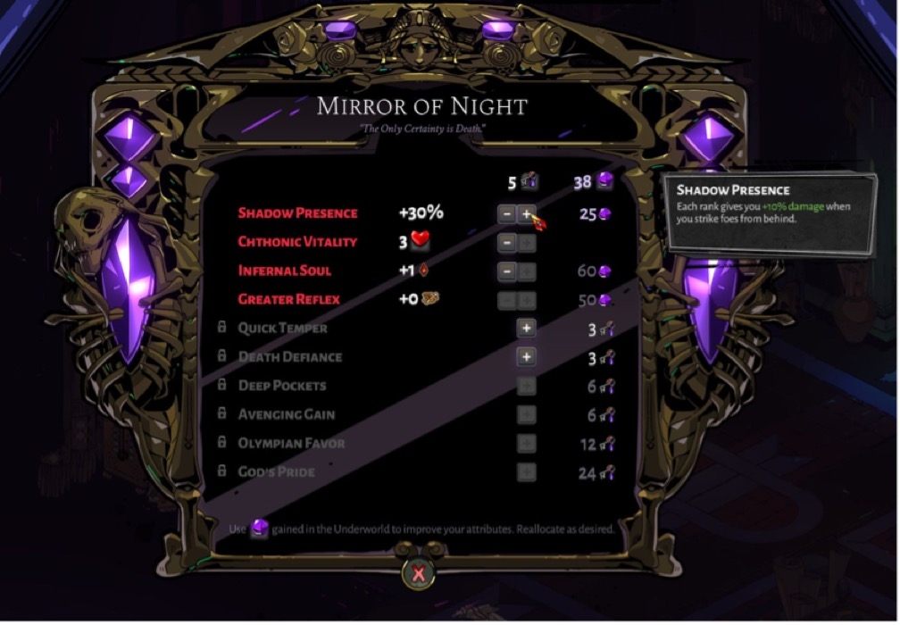
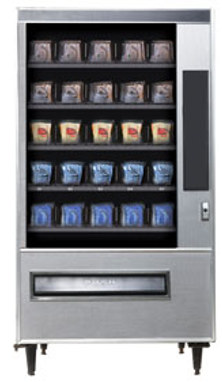
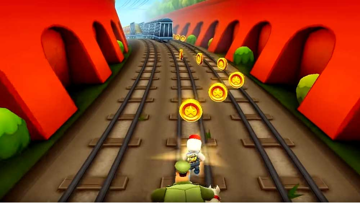

Game Treatment
21/03/22 14:11
Elevator Pitch
A third-person, reverse roguelike, played by a wizard who escaped a magical prison through a portal and landed into a futuristic alleyway. But beware! The prison warden followed you through the portal. Fight your way through the alleys of dystopian New York while evading the warden.Detailed Description
The game takes place in a dystopian alternative Manhattan alleyway. The player is an outcast, high-class wizard, who broke out from an interdimensional prison, and the prison’s warden (a creepy spirit creature who can drain others' souls to weaken them) has taken chase. The player’s health depletes as they continuously run from the warden, but the player also gains lost spells throughout the run.The primary objective of the game is to try survive the chase for as long as possible. Because the game is infinite, there will be no way for the player to win.
The alleyway contains muggers, knife throwers, and mutated rats that act as enemies.
The number of enemies increases the further you go, but it is also harder to fight them because the wizard’s health slowly drains due to the warden, draining faster the closer it is to the wizard.
The game mechanic revolves around the player trying to beat their high score with each run. After every run, you gain coins based on the time of your run and the number of enemies killed. You can use these coins on the vending machine in your home base to improve your base stats.



Technical Assets
- Character controller for moving, jumping and attacking
- Collision detection
- Timer for spell degradation
- Dialogue system
- Navigable UI/UX
- Pathfinding for the chasing creature
- Procedural generation blueprints
- Spell key binding
- Spell particle effects
- Scoring and Stats